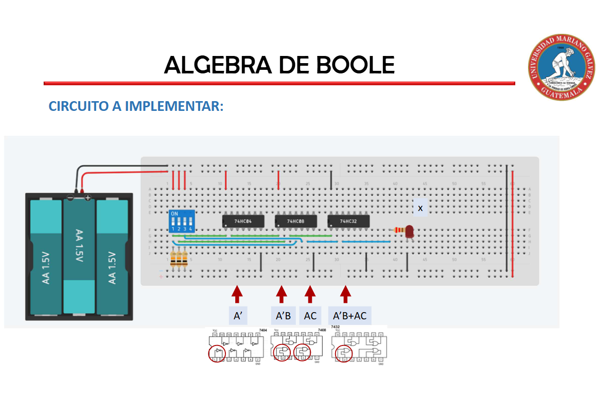
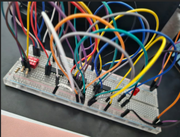

El proyecto consiste en el diseño y montaje de un circuito digital combinacional, partiendo de una función lógica previamente definida.
Dicha función debe ser simplificada mediante la aplicación rigurosa del Álgebra de Boole, con el fin de obtener su mínima expresión y garantizar
un diseño más eficiente. Una vez alcanzada la forma más sencilla, se procede a representar el circuito utilizando las compuertas lógicas
necesarias y a organizar su montaje, ya sea de manera práctica en laboratorio o mediante simulación digital.
Este trabajo implica un proceso integral que abarca el análisis de la función inicial, la aplicación de técnicas de simplificación
como mapas de Karnaugh o leyes algebraicas, y la representación final en un esquema digital claro y funcional. De esta manera, el
proyecto integra teoría y práctica, fomenta el razonamiento lógico y la precisión técnica, y fortalece las competencias en el desarrollo
de sistemas electrónicos, preparando al estudiante para enfrentar retos más complejos en el ámbito de la ingeniería.
Los objetivos de este proyecto se centran en diseñar y montar un circuito digital combinacional a partir de una función lógica previamente definida, aplicando rigurosamente el Álgebra de Boole para simplificarla hasta su mínima expresión y garantizar un diseño eficiente. Se busca además representar el circuito con las compuertas necesarias, organizar su montaje de manera práctica en laboratorio o mediante simulación digital, y aplicar técnicas de simplificación como mapas de Karnaugh o leyes algebraicas. Con ello, se pretende integrar teoría y práctica, fomentar el razonamiento lógico y la precisión técnica, y fortalecer las competencias del estudiante en el desarrollo de sistemas electrónicos, preparándolo para enfrentar retos más complejos en el ámbito de la ingeniería.

